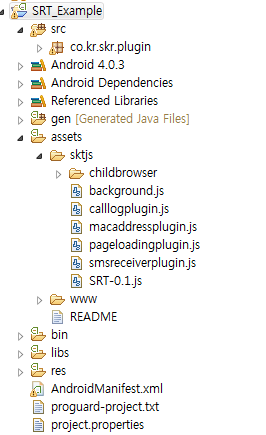

1. Cornerstone Runtime 기본구조
1.1 공통 Runtime 기본구조

Cornerstone Runtime은 크게 platform 별 Native Layer와 Java Script Layer의 2가지의 layer로 나눠 진다.
Native layer는 각 플랫폼 별 Webview를 포함하여 사용한다.
Native layer는 각 플랫폼 별 사용되는 언어로 개발되어 있으며 JavaScript layer에서 요청된 DeviceAPI 를 플랫폼 SDK를 이용하여 처리된다.
1.1.1 Runtime JavaScript layer
Java Script layer는 웹앱에서 사용하기 위한 JavaScript API들을 선언 및 정의 하며 이를 Runtime의 native layer와 연결하는 역할을 한다.
SRT-x.x.js 형태로 배포 되며 Runtime이 업데이트 될때마다 버전명이 올라간다. > 2012.10.08 기준 SRT-1.0.js 배포
SRT-x.x.js 는 크게 두가지 역할로 구분된다.
- DeviceAPIs : 웹앱에서 사용하는 JavaScript API ProtoType 정의
- exec module: JavaScript APIs 를 Native Runtime Library와 연결하여 통신하는 공통 인터페이스 모듈
- js prompt()함수를 native 단에서 재정의 하여 JavaScript와 native의 연결 통로가 된다.
- js prompt()함수를 native 단에서 재정의 하여 JavaScript와 native의 연결 통로가 된다.
1.2 Android Runtime 기본 구조
1.2.1 Android Native Layer
Android Webview를 이용하여 Runtime JavaScript Library에서 호출된 API를 그에 해당하는 Native Class를 실행하고 성공/실패 콜백 전달하는 모듈
WebApp에서 Device의 특정 기능을 수행 및 webview를 사용하기 위하여 Runtime.jar 가 배포된다.
- Runtime.jar는 Java class로 구성되어 있는 Android용 native library 이다.
- Runtime.jar는 web app의 index.html을 load하는 파일을 포함 하고 있다.
- Runtime.jar는 Cornerstone Runtime에서 제공하는 DeviceAPI가 포팅되어 있다.
- Runtime.jar는 Native code로 모듈화 되어 Android SDK 로 부터 작업을 수행하고 결과를 JavaScript layer에 반환 한다.
1.2.2 Android Project Files
Android용 webapp을 개발하기 위해서는 아래 와 같은 project file 들을 세팅하여야 한다.
1) AndroidManifest.xml
- WebApp의 고유한 package 명 설정
2) res/value/string.xml
- 실제 단말에서 보여지는 WebApp의 이름 설정
3) res/drawable/icon.png
- 실제 단말에서 보여지는 아이콘 설정
1.3 IOS Runtime 기본 구조
1.3.1 IOS Native Layer

UIWebview를 이용하여 Runtime JS Library에서 불리는 API를 그에 해당하는 Native Class를 실행하고 성공/실패 콜백 전달 모듈
- RuntimeDelegate : UIWebview를 생성하고 Runtime API를 연동
- ViewController : UIWebview와 Device를 연결하고 Orientaion을 제어
- Commands : JS API 를 Native Platform API를 통해서 구현
- Utils : JSON / Base64 / ExtendMutableArray / ExtendMutableDictionary 라이브러리
SRT.framework 라는 이름으로 배포된다.
1.3.2 IOS Project Files
iOS용 webapp을 개발하기 위해서는 아래 와 같은 project file 들을 세팅하여야 한다.
1) SRT_Template-Info.plist
- iOS 어플 설정을 위한 프로젝트 파일
2) SRT.plist
- Cornerstone Runtime 설정을 위한 프로젝트 파일
3) Resources
- icon / splash screen 용 이미지 파일들
2. Cornerstone Runtime 확장 구조 개발
2.1. 개요
WebApp은 Device Platform (Android, iOS..)에서 제공하는 Native SDK API를 사용할 수 없다. 따라서 WebApp에서 단말 기능을 사용하고자 한다면 브라우져 및 Runtime에서 제공하는 JavaScript Extension API를 사용하여야 한다. 이를 가능하게 하는것이 Cornerstone Runtime 이며 , 이 Cornerstone Runtime 내부에서 HTML5 Spec을 준수하는 API (contact , calendar, file .. etc) 와 추가적인 Additional API (audio, childBrowser..etc) 를 제공한다.
통신사 별 과금 처리와 같은 추가적인 API 를 WebApp에서도 사용하고자 한다면 선 개발된 Cornerstone Runtime에 Plugin 형태로 추가 개발 할 수 있다. 마찬가지로 Cornerstone Runtime에서 제공하지 않는 단말 접근 기능을 개발하고자 한다면 이 역시 plugin 형태로 확장 개발 할 수 있다.
2.2 Android Runtime 확장 구조 개발
2.2.1 Android Runtime 확장 구조 개발 환경

- 아래 링크를 통하여 확장구조 개발에 필요한 Android Native source와 JavaScript source 예제를 참조할 수 있다.
./sample/Android_plugin_sample.zip
1) src - plugin 개발시에 작성하는 Java Native Code
2) asset - 실제 웹앱의 웹 리소스(HTML/CSS/JS/IMG) 와 Runtime JavaScript Library 가 저장되는 위치
- assets/www : 웹앱의 저장 위치
- assets/www/index.html : 웹앱의 첫 실행 파일
3) libs - Webview 를 이용하여 Device 의 단말 접근 기능을 제공하는 DeviceAPI가 포팅된 Android Library 위치
- Runtime.jar : webview 및 DeviceAPI가 포팅된 JAVA library
4) drawable - device에 보여지는 icon 및 splash image를 저장하는 위치
- icon.png : device에 보여지는 icon
- splash.png : 웹앱 실행 초기에 보여지는 splash image (optional)
5) values , xml - 웹앱의 name 및 runtime setting을 할 수 있는 폴더
- plugin.xml : plugin을 Runtime에 등록하는 파일
- value/string.xml : 웹앱의 name을 세팅하는 파일
- xml/config.xml : device의 orientation(portrait , landscape , audo) 및 splash image를 세팅 하는 파일
6) AndroidManifest.xml : 하나의 Native Application으로써의 고유한 Package 명을 지정하는 파일, 하드웨어 가속 GPU 렌더링 사용여부를 지정하는 파일.
2.2.2 Android Runtime 확장 구조 개발 절차
step 1. Authoring tool을 이용해 Android Web App Template를 받으면 Lib 폴더에 Runtime.jar가 기본으로 포함되어 있다.

step 2. 확장 구조 개발자는 아래의 그림과 같이 src 폴더의 .java 파일에 추가할 native 모듈에 대한 정의를 한다.

src 폴더를 생성한다.
package 명을 지정한다. 이는 plugin.xml에 입력될 값이다.
example - co.kr.skr.plugin
native 모듈을 개발을 위한 .java 파일을 생성한다.
- Plugin class 를 extends 한다.
- execute 함수를 재정의 한다.
example code
public class pluginEx extends Plugin{ @Override public PluginResult execute(String arg0, JSONArray arg1, String callbackId) { // TODO Auto-generated method stub return null; } }execute 함수 내부에 native api를 이용하여 특정 기능을 구현 한다.
return 형은 PluginResult 이다. PluginResult 객체에 status와 필요하다면 JavaScript에 전달 할 message를 입력한다.
1) 특정 기능이 성공적으로 완료된 경우 (JavaScript SuccessCallback 호출)
return new PluginResult(Status.OK, returnObj);2) 특정 기능이 실패 한 경우 (JavaScript ErrorCallback 호출)
return new PluginResult(Status.ERROR, errorObj);3) 별도의 JavaScript 알림이 필요 없는 경우
return new PluginResult(Status.NO_RESULT);
example code (MacAddress plugin)
@Override public PluginResult execute(String action, JSONArray args, String callbackId) { this.callbackId = callbackId; //action은 JavaScript에서 정의한 extension api 명이다. //device의 MacAddress를 얻는 기능 if(action.equalsIgnoreCase("getMacAddress")){ WifiInfo wifiInfo = wifiManager.getConnectionInfo(); String macAddress = wifiInfo.getMacAddress(); PluginResult result = new PluginResult(PluginResult.Status.OK, macAddress); return result; } else if(action.equalsIgnoreCase("getDeviceID")){ String android_id = Secure.getString(ctx.getContentResolver(), Secure.ANDROID_ID); PluginResult result = new PluginResult(PluginResult.Status.OK, android_id); return result; } //device의 개통된 번호를 얻는 기능 else if(action.equalsIgnoreCase("getPhoneNumber")){ String phoneNumber = tm.getLine1Number(); return new PluginResult(PluginResult.Status.OK, phoneNumber); } return new PluginResult(PluginResult.Status.NO_RESULT); }setContext 함수를 재정의 하여 plugin 로딩시 초기화 작업 및 API가 호출되기 전의 특정 작업을 수행 할 수 있다.
example code (MacAddress plugin)
@Override public void setContext(RuntimeInterface ctx) { // TODO Auto-generated method stub super.setContext(ctx); wifiManager = (WifiManager)ctx.getSystemService(Context.WIFI_SERVICE); tm = (TelephonyManager) ctx.getSystemService(Context.TELEPHONY_SERVICE); }isSynch 함수를 재정의 하여 특정 API에 대하여 동기적으로 동작하게 함수를 개발 할 수 있다. 특정 api에 대하여 재정의 하지 않는다면 API는 비동기로 동작한다.
example code (MacAddress plugin)
@Override public boolean isSynch(String action) { //getMacAddress api는 동기적으로 동작 if(action.equals("getMacAddress")) return true; else if(action.equals("getDeviceID")) return true; else if(action.equals("getPhoneNumber")) return true; return super.isSynch(action); }execute 함수의 3번째 매개변수(callbackId)를 이용하여 JavaScript callback에 Native에서 pluginResult 객체를 지속적으로 return 할 수 있다.
example code ( Plugin.success() api를 이용하여 callback을 보내는 방법)
@Override public PluginResult execute(String action, JSONArray args, String callbackId) { JSONObject obj = args.optJSONObject(0); if(action.equalsIgnoreCase("for")){ int end = obj.optInt("end"); int i = obj.optInt("start"); //현재 action에 대한 callback ID를 내부에 저장한다. this.callbackId = callbackId; threadstop = false; do{ i++; if(i%1000 == 0){ PluginResult result = new PluginResult(PluginResult.Status.OK, i); // result를 setKeepCallback(true) 로 설정한다. // 위와 같이 설정 하면 JS library에서 callback을 delete 하지 않는다. // default는 false이다. result.setKeepCallback(true); // action에 대한 calbakcId에 result를 지속적으로 보낼 수 있다. this.success(result, this.callbackId); } else if(i == end){ threadstop = true; PluginResult result = new PluginResult(PluginResult.Status.OK, "stop"); // result를 setKeepCallback(false) 로 설정한다 result.setKeepCallback(false); // action에 대한 calbakcId에 result를 마지막으로 보낸다. // result의 keepCallback이 false이기 때문에 JS lib에서 callback을 delete한다. this.success(result, this.callbackId); } }while(!threadstop); } return new PluginResult(PluginResult.Status.NO_RESULT); }
step 3. 확장 구조 개발자는 아래의 그림과 같이 asset 폴더의 .js 파일에 추가할 JavaScript 모듈에 대한 정의를 한다.

asset 폴더 내에 JavaScript plugin 을 위한 .js 파일을 생성한다.
JavaScript plugin 객체를 생성한다.
code example
var MacAddress = function() {};JavaScript Extension API 의 prototype을 정의 한다.
code example 1 (SuccessCallback, ErrorCallback , 매개변수가 없는 api)
MacAddress.prototype.getMacAddress = function() { //do sync var macAddress = srt.exec(null, null, 'MacAddress', 'getMacAddress', []); return macAddress; };code example 2 (SuccessCallback, ErrorCallback , 매개변수가 있는 api)
MacAddress.prototype.list = function(successCallback, failureCallback,params) { srt.exec(successCallback, failureCallback, 'MacAddress', 'list', [ params ]); };JavaScript plugin 객체를 Cornerstone Runtime JavaScript Library의 plugin으로 등록 한다.code example
srt.addConstructor(function() { //window.plugin.MacAddress 로 javascript 에 노출 된다. srt.addPlugin('MacAddress', new MacAddress()); });
Full Example (MacAddressPlugin.js)
var MacAddress = function() {};
MacAddress.prototype.getMacAddress = function() {
//do sync
var macAddress = srt.exec(null, null, 'MacAddress', 'getMacAddress', []);
return macAddress;
};
MacAddress.prototype.list = function(successCallback, failureCallback,params) {
srt.exec(successCallback, failureCallback, 'MacAddress', 'list', [ params ]);
};
MacAddress.prototype.getDeviceID = function() {
//do sync
var deviceID = srt.exec(null, null, 'MacAddress', 'getDeviceID', []);
return deviceID;
};
srt.addConstructor(function() {
srt.addPlugin('MacAddress', new MacAddress());
});
step 4. 플러그 인을 Runtime에 등록하고자 할 때에는 개발한 plugin 이름과 실제 구현된 java파일 위치를 res/xml/plugin.xml 파일에 작성한다.

- name 은 JavaScript 등록을 위해 srt.addPlugin() 에 등록되었던 이름이다.
value 는 실제 Java 파일이 작성된 package의 full path 이다.
plugin.xml
`<plugin name="MacAddress" value="co.kr.skr.plugin.MacAddressPlugin" />`<plugin name="CallLog" value="org.skt.runtime.plugin.CallLogPlugin" />
step 5. 웹앱의 시작 파일은 반드시 index.html 이어야 한다. SRT-1.0.js는 플러그인 개발 환경 template의 기본 포함된 파일이다.

특정 웹페이지 내부에서 DeviceAPI를 사용하고 할 때에는 아래와 같이 JavaScript Library를 선언한다.
<script type="text/javascript" charset="utf-8" src=*../path/SRT-0.1.js"></script>특정 웹페이지 내부에서 추가된 Plugin을 사용하고 할 때에는 아래와 같이 JavaScript Library를 선언한다.
Example 1. MacAddress Plugin 사용 예제
<script type="text/javascript" charset="utf-8" src="../path/macaddressplugin.js"></script>
<script type="text/javascript">
function getMacAddress(){
var macAddress = window.plugins.MacAddress.getMacAddress();
alert("MacAddress = " + macAddress);
}
function getPhoneNumber(){
var phoneNumber = window.plugins.MacAddress.getPhoneNumber();
alert("phoneNumber = " + phoneNumber);
}
function getDeviceID(){
var id = window.plugins.MacAddress.getDeviceID();
alert("Device id = " + id);
}
</script>
Example 2. CallLog Plugin 사용 예제
<script type="text/javascript" charset="utf-8" src="../path/calllogplugin.js"></script>
<title>CallLog Test</title>
<script type="text/javascript">
function calllogSC(obj){
if (obj.length > 0) {
alert(obj[0].number);
alert(obj[0].duration);
} else {
alert("empty call log");
}
}
function errorcallback(e) {
alert(e);
}
function getCallLogs() {
window.plugins.CallLog.list(calllogSC, errorcallback, "day");
}
</script>
step 6. Res 폴더 내부에 웹앱 개발자가 사용하고자 하는 아이콘 이미지를 icon.png의 이름으로 삽입한다.

step 7. AndroidManifest.xml 파일 내부의 package 명을 개발자가 변경을 해줘야 한다. 이는 고유한 값으로 Android 시스템 내부의 중복된 어플이 설치되지 않도록 한다.

기본적인 Manifest 파일의 형식
<manifest xmlns:android="http://schemas.android.com/apk/res/android" android:windowSoftInputMode="adjustPan" package="co.kr.skt.testapp.test" android:versionName="1.1" android:versionCode="5">GPU 하드웨어 가속 렌더링을 사용하고 싶다면 아래와 같이 application tag에 hardwareAccelerated 를 true로 설정 한다. 이는 웹 앱이 디바이스에서 사용하는 메모리 점유율을 늘어나지만 부드러운 2D image 렌더링을 가능하게 한다. (default는 생략됨)
<application android:icon="@drawable/icon" android:label="@string/app_name" android:hardwareAccelerated="true" android:debuggable="true">
step 8. Application의 실제 단말기에서 보여지는 이름을 string.xml의 app_name에 정의한다.

string.xml
<resources> <string name="app_name">테스트웹앱</string> </resources>
step 9. Eclipse의 빌드 아이콘을 이용하여 Android App을 빌드하여 Device에 정상적으로 설치됨을 확인한다.

step 10. Device에 WebApplication이 정상적으로 출력됨을 확인한다.
2.3 iOS Runtime 확장 구조 개발
2.3.1 iOS Runtime 확장 구조 개발 환경

- 아래 링크를 통하여 확장구조 개발에 필요한 iOs Native source와 JavaScript source 예제를 참조할 수 있다.
./sample/iOS_plugin_sample.zip
1) SRT.framework - Cornerstone Runtime Library
2) www - 실제 웹앱의 웹 리소스(HTML/CSS/JS/IMG) 와 Cornerstone Runtime JavaScript Library 가 저장되는 위치
- www : 웹앱의 저장 위치
- www/index.html : 웹앱의 첫 실행 파일
- www/SRT-1.0.js : Cornerstone Runtime JavaScript Library
3) SRT_Template/Resources - 어플에 필요한 리소스를 저장하는 위치
- icons : Icon을 위한 이미지 폴더
- splash : splash screen을 위한 이미지 폴더
4) SRT_Template/Supporting Files - 앱 및 런타임 설정 파일이 위치하는 폴더
- SRT_Template-Info.plist : iOS 앱을 위한 설정 파일
- SRT.plist : Cornerstone Runtime을 위한 설정 파일
- Plugins : 확장구조를 위한 폴더
2.3.2 iOS Runtime 확장 구조 개발 절차
step 1. Authoring tool을 이용해 iOS SRT_Template를 받아서 SRT_Template.xcodeproj 파일을 연다

step 2. 확장 구조 개발자는 아래의 그림과 같이 SRT_Template/Plugins 에 추가할 native 모듈에 대한 정의를 한다.

native 모듈을 개발을 위한 Objective-C 헤더 파일을 생성한다.
- SRT Framework의 RTPlugin.h 파일을 import 한다.
- 클래스 생성시 RTPlugin class 를 상속 받는다.
Javascript에서 불리울 함수를 선언한다. 함수 파라메터는 아래와 같다.
-(void)FUNCTIONNAME:(NSMutableArray*)arguments withDict:(NSMutableDictionary*)options;
full example code (RTPageLoading.h)
#import <SRT/RTPlugin.h> @interface RTPageLoading : RTPlugin { } -(void) getStartPageLoadingTime:(NSMutableArray*)arguments withDict:(NSMutableDictionary*)options; @endnative 모듈을 개발을 위한 Objective-C 소스 파일을 생성한다.
헤더에서 선언한 함수를 정의한다.
1) Javascript에서 array 형식으로 파라메터 전달시에는 NSMutableArray* arguments 로 전달 된다.
2) Javascript에서 구조체 형식으로 파라메터 전달시에는 NSMutableDictionary* options 로 전달 된다.
return 형은 RTPluginResult 이다. RTPluginResult 객체에 status와 message를 담는다. message는 생략 가능하다.
1) status : 성공 , message : double형태로 전달인 경우
RTPluginResult* result = [RTPluginResult resultWithStatus:RTCommandStatus_OK messageAsDouble:123456.789];2) status : 성공 , message : dictionary 형태로 전달인 경우
RTPluginResult* result = [RTPluginResult resultWithStatus:RTCommandStatus_OK messageAsDictionary:anydict];3) status : 실패 인 경우
RTPluginResult* result = [RTPluginResult resultWithStatus:RTCommandStatus_ERROR];Accelerometer와 같이 지속적으로 콜백을 호출하는 경우에는 RTPluginResult에 setKeepCallback API를 호출하여 설정 한다. 설정하지 않으면 콜백은 1회성으로만 전달된다.
[result setKeepCallback:[NSNumber numberWithBool:YES]];RTPluginResult 타입은 writeJavascript 함수를 통해 자바스크립트로 전달 가능하다. callbackID를 이용하여 호출자로 전달하며 callbackID는 arguments array의 첫번째 값이며 NSString 형태로 전달 된다.
1) callback id를 전달 받는 경우
NSString* callbackId = [arguments objectAtIndex:0];2) 호출자(javascript api)의 성공 콜백을 부르는 경우
[super writeJavascript:[result toSuccessCallbackString:callbackId]];3) 호출자(javascript api)의 실패 콜백을 부르는 경우
[super writeJavascript:[result toErrorCallbackString:callbackId]];
full example code (RTPageLoading.m)
#import "RTPageLoading.h" @implementation RTPageLoading -(void) getStartPageLoadingTime:(NSMutableArray*)arguments withDict:(NSMutableDictionary*)options { NSString* callbackId = [arguments objectAtIndex:0]; RTPluginResult* result = [RTPluginResult resultWithStatus:RTCommandStatus_OK messageAsDouble:123456.789]; [super writeJavascript:[result toSuccessCallbackString:callbackId]]; } @end }
step 3. 확장 구조 개발자는 아래의 그림과 같이 www 폴더의 .js 파일에 추가할 JavaScript 모듈에 대한 정의를 한다.

asset 폴더 내에 JavaScript plugin 을 위한 .js 파일을 생성한다.
JavaScript plugin 객체를 생성한다.
code example
var PageLoading = function() {};JavaScript Extension API 의 prototype을 정의 한다.
code example 1 (SuccessCallback, ErrorCallback , 매개변수가 없는 api)
PageLoading.prototype.getStartPageLoadingTime = function() { srt.exec(null, null, 'PageLoading', 'getStartPageLoadingTime', []); };code example 2 (SuccessCallback, ErrorCallback , 매개변수가 있는 api)
PageLoading.prototype.list = function(successCallback, failureCallback,params) { srt.exec(successCallback, failureCallback, 'PageLoading', 'list', [ params ]); };JavaScript plugin 객체를 Cornerstone Runtime JavaScript Library의 plugin으로 등록 한다.code example
srt.addConstructor(function() { //window.plugin.PageLoading 로 javascript 에 노출 된다. srt.addPlugin('PageLoading', new PageLoading()); });
Full Example (PageLoading.js)
var PageLoading = function() {};
PageLoading.prototype.getStartPageLoadingTime = function() {
srt.exec(null, null, 'PageLoading', 'getStartPageLoadingTime', []);
};
PageLoading.prototype.list = function(successCallback, failureCallback,params) {
srt.exec(successCallback, failureCallback, 'PageLoading', 'list', [ params ]);
};
srt.addConstructor(function() {
srt.addPlugin('PageLoading', new PageLoading());
});
step 4. 플러그 인을 Runtime에 등록하고자 할 때에는 개발한 js plugin 이름과 실제 구현된 Objective-C 클래스 이름을 SRT.plist 의 Plugins 의 Key / Value로 등록한다

- key 는 JavaScript 등록을 위해 srt.addPlugin() 에 등록되었던 이름이다.
value 는 plugin Objective-c 클래스 명이다.
plugin.xml
<key>Plugins</key> <dict> <key>PageLoading</key> <string>RTPageLoading</string> </dict>
step 5. 웹앱의 시작 파일은 반드시 index.html 이어야 한다. SRT-1.0.js는 template 기본 파일이다.

특정 웹페이지 내부에서 DeviceAPI를 사용하고 할 때에는 아래와 같이 JavaScript Library를 선언한다.
<script type="text/javascript" charset="utf-8" src=SRT-0.1.js"></script>특정 웹페이지 내부에서 추가된 Plugin을 사용하고 할 때에는 아래와 같이 JavaScript Library를 선언한다.
<script type="text/javascript" charset="utf-8" src="pageloadingplugin.js"></script>
Full Example 1. PageLoading Plugin(index.html) 사용 예제
<!DOCTYPE html>
<html lang="ko">
<head>
<meta charset="UTF-8">
<meta name="viewport" context="width-divice-width, initial-scele-1.0, user-scalble=no">
<script type="text/javascript" charset="utf-8" src="SRT-1.0.js"></script>
<script type="text/javascript" charset="utf-8" src="pageloadingplugin.js"></script>
<title>PageLoadingPlugin</title>
<script type="text/javascript">
function startLoadingTimeTest(){
function sc(time){
alert(time + " milliseconds");
}
function ec(){
alert("error");
}
window.plugins.PageLoading.getStartPageLoadingTime(sc,ec);
}
</script>
</head>
<hr> PageLoadingPlugin API Test<BR>
<button onclick="startLoadingTimeTest();">startLoadingTimeTest</button><br>
</body>
</html>
Example 2. CallLog Plugin 사용 예제
<script type="text/javascript" charset="utf-8" src="../path/calllogplugin.js"></script>
<title>CallLog Test</title>
<script type="text/javascript">
function calllogSC(obj){
if (obj.length > 0) {
alert(obj[0].number);
alert(obj[0].duration);
} else {
alert("empty call log");
}
}
function errorcallback(e) {
alert(e);
}
function getCallLogs() {
window.plugins.CallLog.list(calllogSC, errorcallback, "day");
}
</script>
step 6. Resources/icons 폴더 내부에 웹앱 개발자가 사용하고자 하는 아이콘 이미지를 프로젝트에 추가한다. 기본으로 설정된 icon 파일 이름은 icon이며 기본 설정일 경우 단말에 따라 적용되는 icon 파일 이름은 아래와 같다. icon 파일 이름 설정 방법은 step 5. 에서 다룬다.
- icon.png : Iphone 3GS 이전 모델 용 아이콘 이미지
- icon@2x.png : iphone 4/4s 용 아이콘 이미지
- icon-72.png : ipad / ipad2 용 아이콘 이미지
- icon-72@2x.png : new ipad 용 아이콘 이미지
{kind=link}
{kind=link}

step 7. Resources/splash 폴더 내부에 웹앱 개발자가 사용하고자 하는 스플래쉬 이미지를 추가한다. 기본으로 설정된 splash 파일 이름은 Splash이며 기본 설정일 경우 단말에 따라 적용되는 splash 파일 이름은 아래와 같다. splash 파일 이름 설정 방법은 step 6.에서 다룬다
참고로 스플래쉬 이미지란 웹앱 실행시 웹앱이 로딩될때까지 보여지는 이미지 화면을 뜻한다.
- Splash.png : Iphone 3GS 이전 모델용 스플래쉬 이미지
- Splash @2x.png : iphone 4/4s 용 스플래쉬 이미지
- Splash-Landscape.png : ipad / ipad2 용 가로 스플래쉬 이미지
- Splash-Portrait.png : ipad / ipad2 용 세로 스플래쉬 이미지
- Splash-Landscape@2x.png : new ipad 용 가로 스플래쉬 이미지
- Splash-Portrait@2x.png : new ipad 용 세로 스플래쉬 이미지
{kind=link}
{kind=link}
step 8. Supporting Files/SRT_Template-Info.plist 파일을 수정하여 어플의 여러 속성 설정이 가능하다. 이는 Cornerstone Runtime 프로젝트 뿐만이 아니라 iOS 어플 공통 적용사항이다. 아래는 주요 설정 값들이다.

- Bundle display name : 어플명
- Icon files / Icon files(iOS5) : 아이콘 이미지 파일 이름명
- Bundle identifier : 어플 고유 ID. 실제 단말 연동을 위해서는 애플사에 개발자 인증(provisioning profile)을 받아야하며 그때 설정한 ID를 넣는다.
- Supported interface orientations / Supported interface orientations(ipad) : 해당 어플이 지원하는 화면 회전 허용값. 예를 들어 Portrait(bottom home button)만이 설정되어 있다면 iPAD에서 회전을 하여도 실제로 화면이 회전되지 않는다.
step 9. Supporting Files/SRT.plist 파일을 수정하여 Cornerstone Runtime의 여러 속성 설정이 가능하다.

- UIWebViewBounce : 화면 드래그를 끝까지 했을 경우 웹뷰가 바운스 효과를 내는지 여부를 설정함.
- EnableLocation : 해당 어플이 Geolocation 을 설정할수 있는지 여부를 설정
- EnableViewportscale : 뷰포트 확대/축소 허용 여부를 설정
- AutoHideSplashScreem : Yes일 경우 DeviceReady가 되면 자동으로 스플래쉬 스크린이 해제된다. No일 경우 API를 통해서 원하는 시점에 해제가 가능하다
- SplashImage : 스플래쉬 스크린을 위한 이미지 파일명 설정. 기본은 “Splash"로 설정되어 있다.
- Plugins : Cornerstone Runtime JS 라이브러리와 Native Class간의 연동을 위한 Map이다. Key의 경우 JS 라이브러리를 위한 모듈명이며 Value의 경우 NativeClass 모듈명이다. 3rd 파티 개발자가 추가 플러그인을 개발할 경우에 사용한다.
- InstalledApplications : AppLauncher 모듈의 getInstalledApplications API 사용시 검색 가능한 어플리스트. 개발자가 어플리스트를 설정하면 getInstalledApplications API를 통해 어플 리스트중 실제 단말에 설치된 어플의 리스트를 가져올 수 있다. 어플리스트는 불려지는 어플에 설정된 URL Schemes에 설정된 값으로 리스트를 설정한다. 기본 설정은 기본 탑재 어플인 music, sms, mailto, videos 4가지가 설정되어 있다.
step 10. Run을 눌러서 실제 단말에서 웹앱이 정상적으로 실행되는지 확인한다.